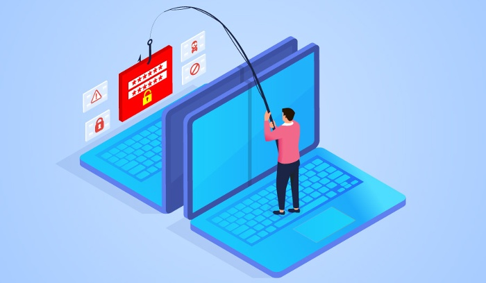
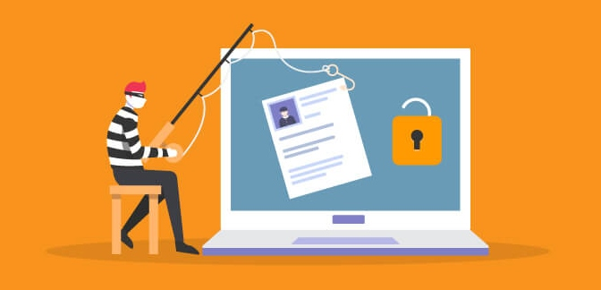

All businesses are now subjected to phishing attacks on a regular basis. Regularly quoted figures suggest that 76% of businesses were subjected to phishing attacks during the last 12 months alone. Since many businesses like yours have already suffered at the hands of these email hacking attempts, it's extremely important to consider employing measures that are designed to combat this growing threat as soon as possible.
Many anti-phishing tools and services have been established to help ensure that your organization is kept safe from scammers and attackers. The capabilities these companies provide along with the way they work can be less than straightforward to understand at first glance.

Anti-phishing tools can be great. Some experts say the best way to go about choosing the right program is to first choose a lightweight browser add-on that picks up on viruses and other threats in real time before they have a chance to infect your computer or harm any important data.
Anti-phishing toolbars are useful, however, there’s a downside to this technology. There has been research showing from time to time that this approach to preventing identity theft has been proven not as effective starting around mid-twenties. It may help to some extent, but don’t take it for granted as the primary source of safety and protection.
Antivirus programs aren’t specifically set up to keep out phishing attacks, but some of them may be able to identify and block such attacks due to the dangers associated with viruses.
Another important feature is that antivirus programs install firewalls. A firewall blocks unwanted communications between your PC and the Internet, keeping your information secure. However, you will probably want to disable these features if you plan on running an email server on your network - better safe than sorry!
Any anti-phishing approach must be taken with care when addressing the issue of IT security. Antivirus software, for instance, is not enough in itself to prevent phishing attacks.
The dangers of phishing pose a real threat to any company that uses email, and the best way to combat these dangers is by using software to filter out potential phishing attempts before they can do harm. Anti-phishing software not only protects your network from phishing attacks, but also helps control spam, malware and other online threats.
Anti-phishing software works by intercepting and scanning any dubious links or possible malware downloads. Such programs block any executable files, while also discarding any malicious emails, while also filtering unwanted spam email into a separate folder.
To fight phishing, you need three main tools: anti-phishing software, employee education and firewalls. There are certainly other methods to approach this problem as well, such as spam filtering or spam filters.

Another aspect of cloud-phishing tools that is worth considering are cloud based solutions. These are focused on a wide range of potential avenues for phishing attacks, but often particularly help protect email from attackers. Cloud based solutions can be updated on a very regular basis due to the way that the cloud operates, and in some cases these products can even be built into a cloud package at the retail level as a paid for service which can make specialized tools cheaper to run and also easier to implement across an organization.
It is also advised that a company needs to focus on training their employees in order to combat phishing attacks. There are many specialized phishing courses out there which help to bring employees up-to-speed on the latest methods used, and it certainly makes sense to go ahead and send all staff on such courses as often as possible.
Finally, running alongside the staff training in parallel should be a business culture that ensures best practices are continuously implemented and that no employee is left behind in terms of understanding the dangers of phishing.
In conclusion, phishing attacks are becoming more sophisticated and can be difficult to detect. It is important to use a trusted anti-phishing solution to protect yourself from these attacks. There are a number of great solutions available, and it is important to find one that fits your needs. Be sure to update your solution regularly to ensure that you are protected against the latest threats.